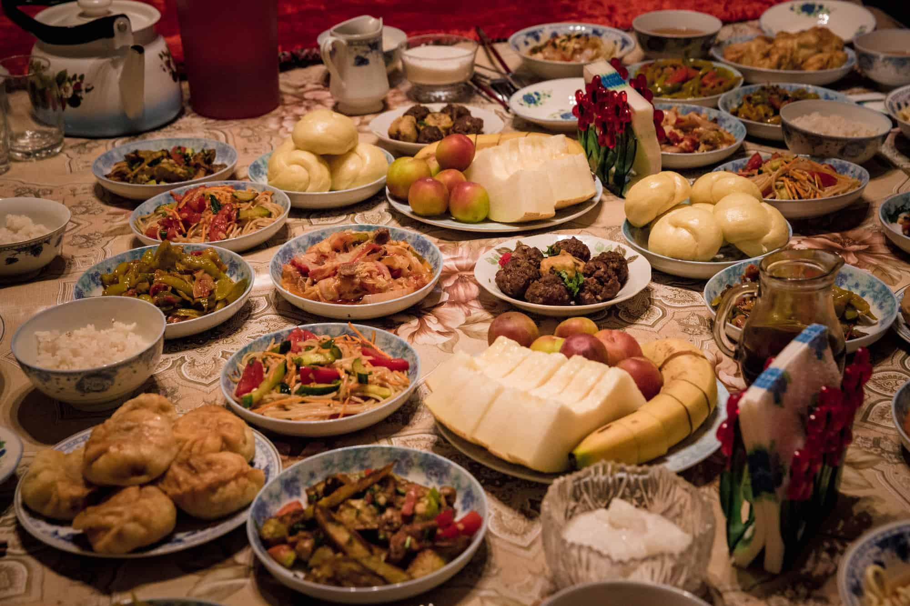

Kyrgyz cuisine is the cuisine of the Kyrgyz, who comprise a majority of the population of Kyrgyzstan. The cuisine is similar in many aspects to that of their neighbors. Traditional Kyrgyz food revolves around mutton, beef and horse meat, as well as various dairy products. The preparation techniques and major ingredients have been strongly influenced by the nation's historically nomadic way of life. Thus, many cooking techniques are conducive to the long-term preservation of food.
